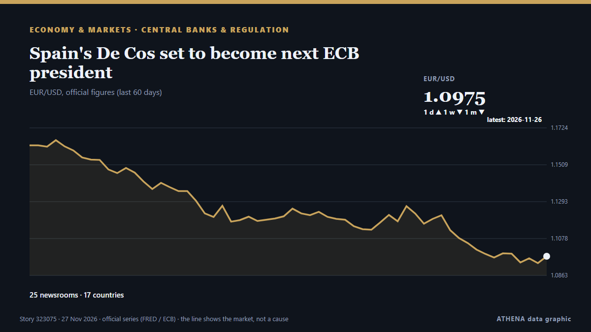

Economics, Finance & Markets
SponsoredPresented by  Cybernetics and Artificial Intelligence Lab Welcome to the Cybernetics and Artificial Intelligence Laboratory, established at the Department of Business Administration of the National and Kapodistrian University of Athens. The lab is headed by Professor Dimitrios Thomakos. The lab aims to do research that can be published in top venues. Our research uses tools and methods of Artificial Intelligence, and lies in the following areas: - Forecasting - Decision making - Cyber security - Finance We are always looking forward to collaborating with exceptional students!
Cybernetics and Artificial Intelligence Lab Welcome to the Cybernetics and Artificial Intelligence Laboratory, established at the Department of Business Administration of the National and Kapodistrian University of Athens. The lab is headed by Professor Dimitrios Thomakos. The lab aims to do research that can be published in top venues. Our research uses tools and methods of Artificial Intelligence, and lies in the following areas: - Forecasting - Decision making - Cyber security - Finance We are always looking forward to collaborating with exceptional students!
Market monitor - official figures
Which way official market measures are moving - up, down or flat - with the latest official figure and its date, and the market news ATHENA verified alongside. Official figures, not live prices.
Energy
| 1 day | 1 week | 1 month | Official figure | |
|---|---|---|---|---|
| Brent crude | ▲ | ▼ | ▼ | $91.80/bblOfficial data of 24 Nov 2026 |
| WTI crude | ▲ | ▼ | ▼ | $82.24/bblOfficial data of 24 Nov 2026 |
| US natural gas (Henry Hub) | ▲ | ▲ | ▲ | $3.30/MMBtuOfficial data of 24 Nov 2026 |
| European natural gas (1 month · 3 months · 12 months)(1M · 3M · 12M) | ▲ | ▲ | ▲ | $25.49/MMBtuOfficial data of 1 Sep 2026 |
| Coal (Australia) (1 month · 3 months · 12 months)(1M · 3M · 12M) | ▲ | ▲ | ▲ | $153.84/tOfficial data of 1 Sep 2026 |
Food
| 1 month | 3 months | 12 months | Official figure | |
|---|---|---|---|---|
| Wheat | ▲ | ▲ | ▲ | $246.85/tOfficial data of 1 Sep 2026 |
US stock markets
| 1 day | 1 week | 1 month | Official figure | |
|---|---|---|---|---|
| S&P 500 | ▼ | ▼ | ▼ | Direction only (index © Cboe)Official data of 24 Nov 2026 |
| Nasdaq Composite | ▼ | ▼ | ▼ | Direction only (index © Cboe)Official data of 25 Nov 2026 |
Rates, risk and the dollar
| 1 day | 1 week | 1 month | Official figure | |
|---|---|---|---|---|
| US 10-year Treasury yield | ▼ | ▼ | ▼ | 4.91 %Official data of 24 Nov 2026 |
| Market volatility (VIX) | ▼ | ▲ | ▲ | Direction only (index © Cboe)Official data of 24 Nov 2026 |
| US dollar, broad index | ▬ | ▲ | ▲ | 123.60Official data of 20 Nov 2026 |
The euro against other currencies
| 1 day | 1 week | 1 month | Official figure | |
|---|---|---|---|---|
| EUR/USD | ▲ | ▼ | ▼ | 1.0975 USDOfficial data of 26 Nov 2026 |
| EUR/GBP | ▬ | ▲ | ▬ | 0.8376 GBPOfficial data of 26 Nov 2026 |
| EUR/CHF | ▲ | ▼ | ▼ | 0.9153 CHFOfficial data of 26 Nov 2026 |
| EUR/JPY | ▲ | ▼ | ▼ | 174.79 JPYOfficial data of 26 Nov 2026 |
| EUR/CNY | ▲ | ▼ | ▼ | 7.3096 CNYOfficial data of 26 Nov 2026 |
| EUR/TRY | ▲ | ▲ | ▲ | 55.618 TRYOfficial data of 26 Nov 2026 |
| EUR/NOK | ▼ | ▲ | ▲ | 10.7180 NOKOfficial data of 26 Nov 2026 |
Sources: US Energy Information Administration (oil, US gas), IMF (European gas, coal, wheat), US Treasury and Federal Reserve (10-year yield, dollar index) Cboe (VIX), S&P Dow Jones Indices (S&P 500) and Nasdaq (Nasdaq Composite), via FRED (Federal Reserve Bank of St. Louis); euro reference rates © European Central Bank. Figures are the latest official values with their date - not live prices. Directions are computed by ATHENA.
Crypto, ETFs and shares in the news
- Musk pledges two SpaceX shares for every US child Risk 1.7 27 Nov
- Dangote Refinery shares to list on NGX December 1 after SEC approval Risk 0.0 27 Nov
- PSX: stocks slip lower, KSE-100 down over 300 points Risk 0.7 27 Nov
- Tata Steel shares rise 1%, APL Apollo falls 9% as brokerages turn cautious on ₹28,000 cr deal Risk 1.2 27 Nov
- Binance lifts withdrawal suspension after $6.3 billion crypto heist Risk 3.5 27 Nov
- Euro zone bond yields rise as stocks bounce Risk 0.9 27 Nov
- Trump’s Nvidia Shares Gained Up to $14.8M After Huang’s Return Risk 4.5 27 Nov
- Celebrating Cultures And Equity On Thanksgiving Day Risk 3.4 27 Nov
- JPMorgan says bitcoin ‘capitulation’ signaled by Strategy’s record-low NAV multiple Risk 0.0 26 Nov
- European stocks end higher on easing tariff fears, ECB leadership continuity Risk 1.0 26 Nov

Central banks & regulationSpain's De Cos set to become next ECB president
Former Bank of Spain Governor and current Bank for International Settlements General Manager Pablo Hernandez de Cos was supposedly endorsed by a majority of European countries as the next European… from AzerNews
| 14 Nov | 39 |
|---|---|
| 15 Nov | 64 |
| 16 Nov | 132 |
| 17 Nov | 101 |
| 18 Nov | 105 |
| 19 Nov | 109 |
| 20 Nov | 79 |
| 21 Nov | 38 |
| 22 Nov | 46 |
| 23 Nov | 117 |
| 24 Nov | 100 |
| 25 Nov | 90 |
| 26 Nov | 82 |
| 27 Nov | 15 |
Binance lifts withdrawal suspension after $6.3 billion crypto heist
The crypto platform added that a small number of networks are temporarily paused while they undergo maintenance or planned upgrades, separate from its completed recovery work. from The Hindu BusinessLine
Lula picks banker Luiz Carlos Trabuco to run the Finance Ministry in his fourth term
BRASILIA, Nov 26 - Brazilian President Luiz Inacio Lula da Silva has approached Luiz Carlos Trabuco, chairman of bank Bradesco, about taking over the finance ministry, two people with knowledge of… from The Straits Times
164 Indonesian, Malaysian nationals rescued from ‘cyber slavery’ racket in Delhi
According to police, the network specifically targeted people in Indonesia and Malaysia by offering them employment opportunities in India. from Hindustan Times
Trump demands probe into ‘fake’ US GDP figures
President Donald Trump called Thursday for an investigation into a routine revision of economic growth figures as he pushed his groundless claims of interference in the US midterm elections. from Vanguard
BOJ calls for safeguards against digital money, AI risks
The growing use of AI also brings fresh cybersecurity threats. from The Business Times
Merz: EU leaders fail to reach agreement on next seven-year budget
A European diplomatic source said that the officials will continue the negotiations in December. from TASS (English)
EUR/USD might be bottoming out amid peak Fed hawkishness and dovish repricing risks
USD: The US dollar has found support recently from a hawkish repricing in interest rate expectations following Governor Waller’s remarks, in which he even floated the possibility of a larger 50 bps… from investingLive (ForexLive)
On Greece's most glamorous island, faith and tradition endure with a celebration of its women
MYKONOS, Greece (AP) — Long before the cruise ships arrived, Mykonos was run by its poor and iron-willed women. from The National Herald
Argentina bans its central bank from printing money for the government
The new charter bars the bank from lending to any level of government or otherwise financing the Treasury. from The Straits Times
Two in, two out in Macquarie management shake-up
Macquarie is making changes to its top executive team only three weeks after Greg Ward took over as chief executive. from Australian Financial Review
Cards overtake cash at eurozone points of sale – ECB report
People still value hard currency and having different payment options, bank’s annual survey finds. from Central Banking
EU leaders divided over budget spending as they weigh a $49 billion loan to Ukraine
Bulgaria, the Czech Republic, Hungary and Slovakia oppose using funds for military aid to Kyiv. from Courthouse News
EU leaders struggle to agree on long-term budget, $49bn Ukraine loan
The bloc is holding an extraordinary summit in Brussels to discuss its budget proposal for 2028 to 2034. from Al Jazeera English
Bangladesh raises minimum wage for garment workers after weeks of protests
A government-formed wage board in Bangladesh has raised the minimum monthly wage for entry-level garment workers by 36% to 17,000 takas, or $136, from 12,500 takas after weeks of violent protests. from ABC News (International)
Tommy Robinson’s ex-wife avoids jail for failing to provide loan records
Jenna Lennon, 41, pleaded guilty to one charge of failing to deliver up books and records about her company Hope & Pride Limited. from The Irish News (Belfast)
French village tackles depopulation with near-free plots of land
France's rural communities are emptying out, but in the village of Parlan, hundreds of new residents have put down roots, drawn by the promise of virtually free land. from VnExpress International
Japanese Yen holds gains as BoJ policymaker signals chance of faster-pace rate hikes
The USD/JPY pair trades with mild losses around 159.20 during the early European trading hours on Thursday. from FXStreet
‘Here I am’: Lookout circular issued, CJP’s Abhijit Dipke rallies in Nagpur anyway
Dipke said he wanted to honour Dr Babasaheb Ambedkar, whose Constitution, he said, guides the country. from Hindustan Times
S&P warns Nvidia’s board may be compromised, puts chipmaker’s rating on downgrade watch
S&P Global Ratings placed Nvidia's credit rating on watch for a possible downgrade on Wednesday, saying the departure and subsequent reinstatement of its CEO had exposed weaknesses in the… from MyJoyOnline
New York court upholds Mayor Mamdani’s rent freeze
The New York state Supreme Court on Wednesday upheld New York City Mayor Zohran Mamdani's rent freeze for nearly half of the city's rental units and denied a petition filed by a group of landlords. from MyJoyOnline
Bank of Korea hikes rate to 3.25% against backdrop of strong economy
Intermodal marketing companies and railroads are using ongoing bid negotiations to raise rates in annual agreements for 2027. from The Journal of Commerce (JOC)
Leaders wrestle over EU’s budget, Ukraine financing, as Le Pen focuses minds
European Union leaders were wrestling over the bloc’s nearly €1.6 trillion ($1.76 trillion) budget proposal for 2028 to 2034 and financing for Ukraine at a summit on Thursday, seeking to narrow… from Cyprus Mail
PM Describes European Commission's Opinion on Bulgaria's Excessive Deficit Response as "Stinging Rebuke"
Bulgaria will not meet the European Commission's requirements for bringing its budget deficit below 3% of gross domestic product this year, Minister for EU Funds Atanas Pekanov said, adding that the… from Novinite
Dubai Islamic Bank to buy Emirates Islamic in all-share deal
Dubai Islamic Bank (DIB) has agreed to acquire Emirates Islamic Bank from Emirates NBD in an all-share transaction that would create the UAE’s largest Islamic banking group, the two lenders announced… from Khaleej Times (working feed)
Oil prices exceed $92 on global commodity markets
Retail fuel prices in Cambodia fell again yesterday following a decline in international oil markets, according to the Ministry of Commerce. from Khmer Times
Hong Kong home prices ease in October as recovery loses steam
The housing market has lost momentum amid a stock market correction. from The Business Times
PM Discusses Options for Financing Transportation Infrastructure Projects with World Bank
SK Hynix to become Kioxia's top shareholder with bond conversion
Korean chip giant SK hynix Inc. is considering converting convertible bonds (CBs) linked to its investment in Kioxia Corp., a Japanese NAND flash memory maker, into shares, industry sources said… from The Korea Times
Value of frozen Russian assets in Switzerland rises to over US$10bn
The value of Russian assets frozen in Switzerland rose by 15% to CHF 8.5 billion (US$10.2 billion) compared with April 2025, Bloomberg reported. from Ukrainska Pravda (English)
US inflation rises further in October
WASHINGTON: US inflation increased further in October, reinforcing expectations that the Federal Reserve could continue raising interest rates into early 2027. from Business Recorder
Ukraine Passes Law to Legalize and Tax Its Crypto Market From July 2027
The law taxes crypto profits at 18% plus a 5% military levy, cuts the rate for older holdings and puts stablecoins under the central bank. from Decrypt
Israeli Developer Simon Aykut Freed on Health Grounds After Transfer from Cyprus
Simon Aykut, the Israeli developer convicted of usurping Greek Cypriot property in the occupied north, has been released by Israel on health grounds, drawing a response from President Christodoulides. from Greek City Times
Will weather ground Macy’s Thanksgiving Parade balloons? Official floats start time change
The Macy’s Thanksgiving Day Parade in New York City is once again facing its eternal foe: wind. from The Independent
PIF secures inaugural S&P ‘A+’ credit rating with stable outlook
RIYADH: Saudi Arabia’s Public Investment Fund has received its first long-term credit rating from S&P Global Ratings, securing an “A+” assessment with a stable outlook, marking another milestone in… from Arab News